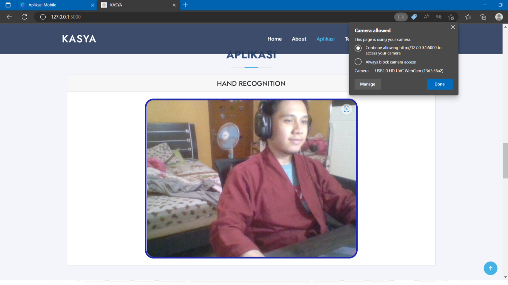
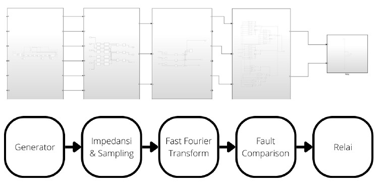

Discover All of My Projects

SAVI Robot
The SAVI (smart vehicle) robot is a robot that can navigate and help humans carry items.
Kasya
Kasya (kata isyarat) is project to develop software AI web-based for translating Indonesian sign language (Bisindo) in real-time.

Ecommerce
Simple Ecommerce website using Laravel 9 as the framework.
FFT Distance Relay
Prototype for Fast Fourier Transform-based distance relay protection system for power transmission simulation using Matlab/Simulink.
Emotion Detection
NLP project for Emotion Detection of Indonesian twitter dataset.
Mini Solar Sun Tracker
The system detects sunlight, then adjusts the direction of the solar panel connected to the motor.